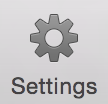
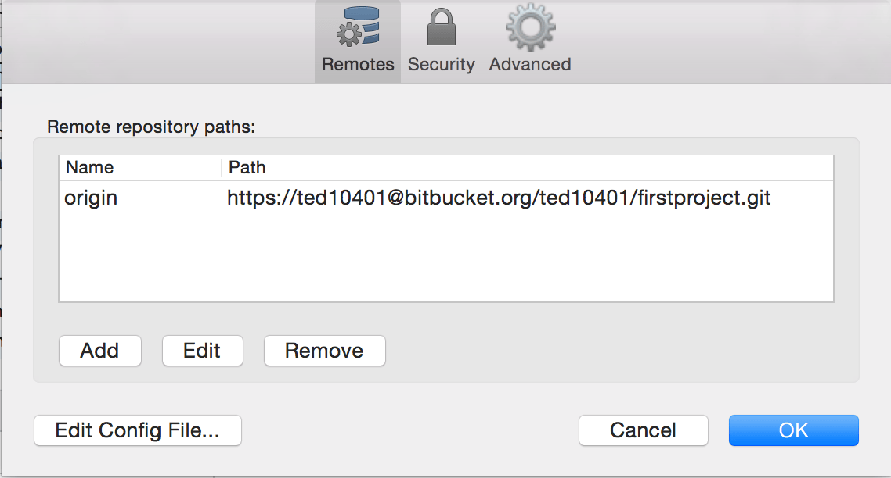
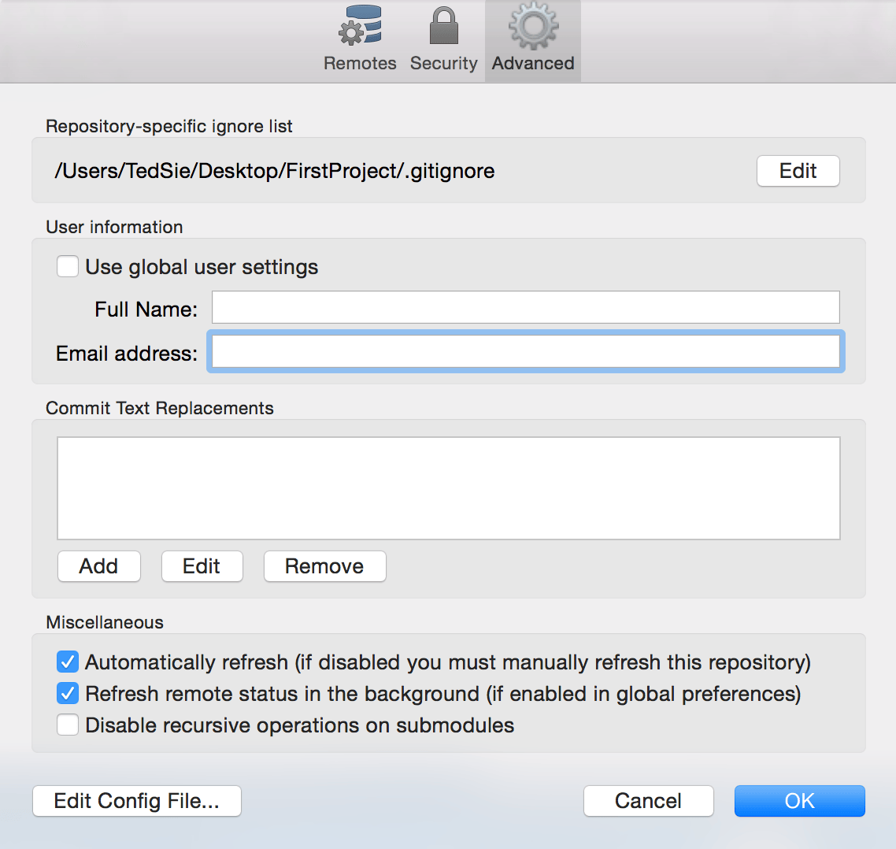

如果在 Push 時遇到了以下錯誤
*** Please tell me who you are.
Run
git config –global user.email “you@example.com”
git config –global user.name “Your Name”
修正方法為
點選右上方 Settings

點選 Advanced

取消勾選 Use global user settings
並填入 Full Name 及正確 Email address
按下 OK 後即可修復 Error
